Retour d'expérience
Outils IA
L'objectif est d'avoir une fenêtre d'aperçu de ce qui est possible à travers mon usage, pas une vérité absolue 🌞
Sommaire
Qui suis-je ?

🚧🚧🚧
Biais
⚠️ Disclaimer
Les biais sur la perception de l'IA
"L'IA peut tout résoudre"
"C'est surpuissant"
➔ Non, ce n'est pas un outil magique.
On prend l'IA pour ses forces et ses limites, un arbitrage entre utilité et risque.
"Utiliser l'IA = accepter tout ce qu'elle propose"
➔ Non, l'IA propose et l'humain dispose.
On doit toujours choisir de garder, modifier ou ignorer ce qu'elle produit.
Utiliser l'IA = assisté = potentiel incompétent ?
Comme si un développeur devrait toujours choisir "the hard way" pour que le travail ait de la valeur.*
➔ Ce raccourci est un biais à déconstruire ; l'IA n'est pas (encore) notre ennemie 🤖
Biais de hype autour de l'IA
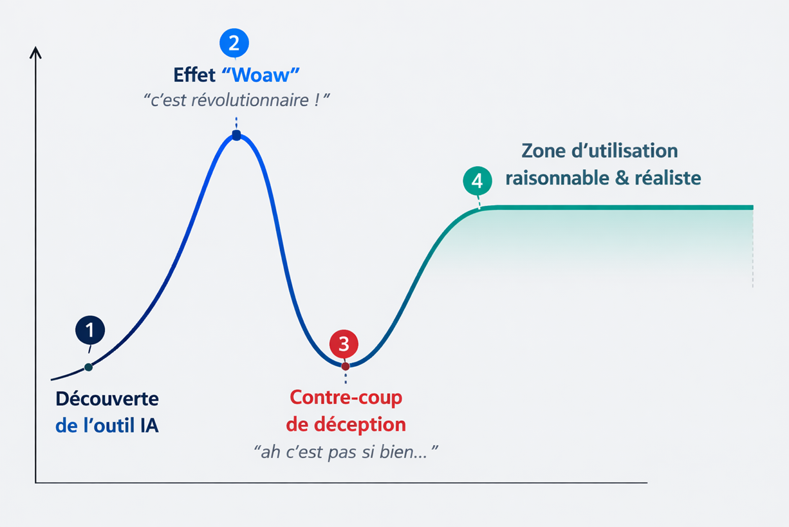
d'utilisation IA
Pyramide des niveaux d'utilisation IA
Conseils & astuces
Quelques conseils pour appréhender les outils IA
2 outils qui font partie de mon quotidien
concrets
Premier outil : Perplexity
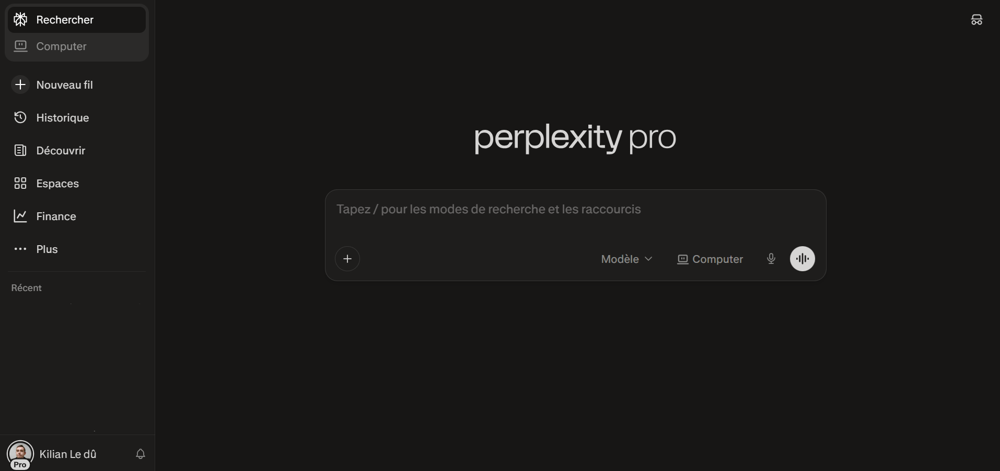
Détails
Juste de l'IA conversationnelle ?
"C'est juste un ChatGPT qui fait des recherches Google ?"
C'est un moteur de réponse sur une question posée, avec un ton neutre et factuel, avec pour chaque affirmation en réponse les sources citées.
Cas concret
Le cas d'une recherche technique
Le travail de vérification suivra, et les premières sources sont déjà mentionnées.
➔ L’IA ne remplace pas la vérification, elle accélère la phase d’exploration.
La question posée
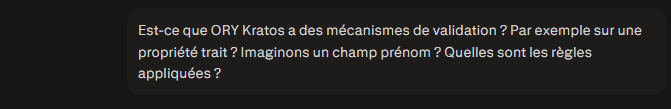
Le raisonnement et la recherche de sources
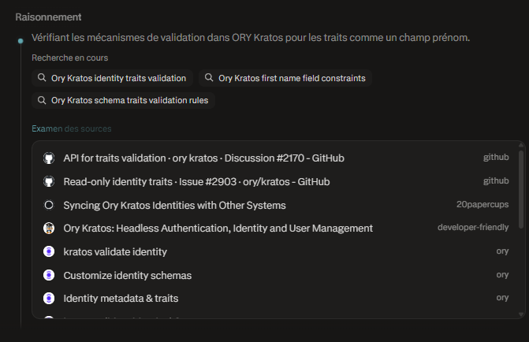
Synthèse et réponse principale
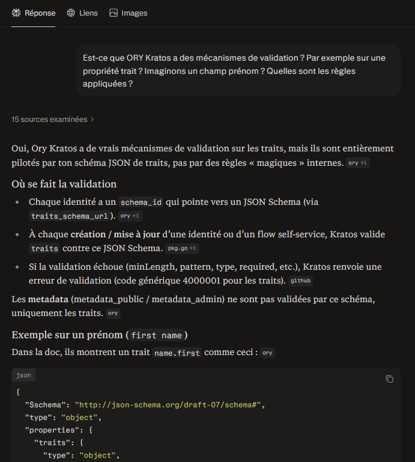
Mention des sources pour chaque affirmation
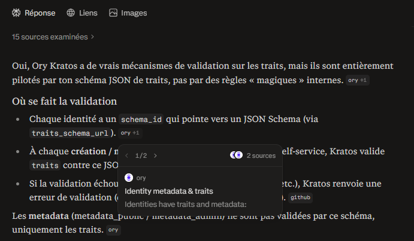
Onglet "Liens" pour les sources
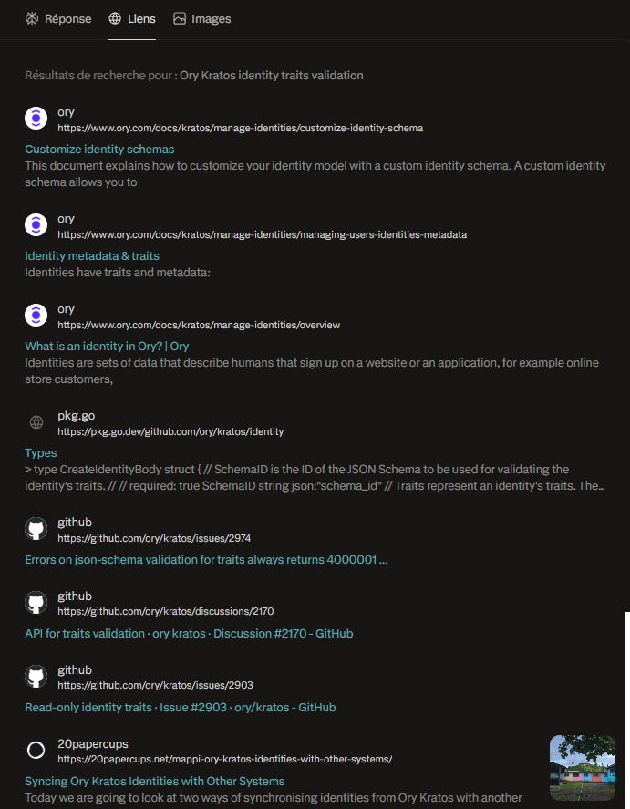
Espaces : un contexte commun et partageable
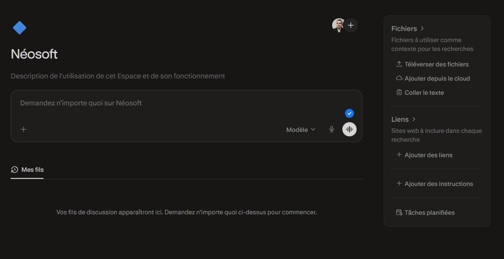
Recherche approfondie : pour aller plus loin
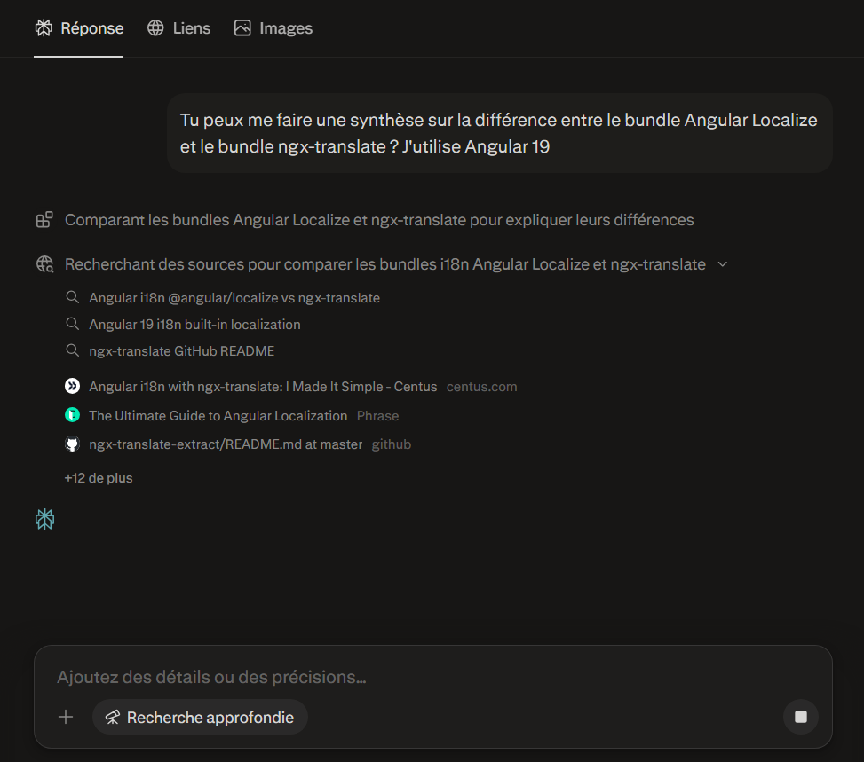
Cartes & vie quotidienne
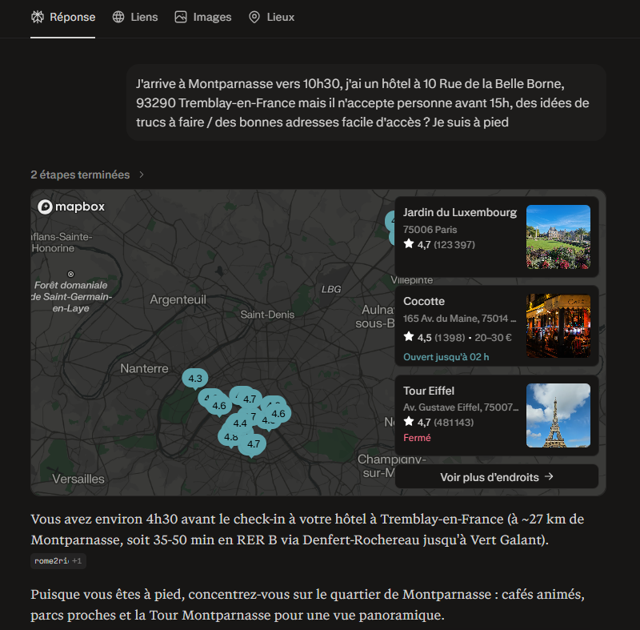
Quelques conseils
- Poser une question précise avec le contexte utile (stack, contraintes).
- S’appuyer sur les sources pour vérifier, pas seulement sur la synthèse.
- Quand c’est critique : croiser et tester avant de valider.
- Aucune donnée sensible dans le prompt (secrets, clients, prod).
- Itérer : une relance ciblée vaut mieux qu’un gros pavé initial.
Second outil : Cursor
- → Ouverture du projet dans Cursor
- → Prompt d'une nouvelle feature
- → Supervision des modifications proposées
- → Itération et validation
Détails
Les 3 modèles que j'utilise
| Modèle | Puissance | Usage |
|---|---|---|
| Claude Opus 4.6 | Très fort | Pour les grosses tâches / grosses réflexions / bugs chiants |
| Claude Sonnet 4.6 | Fort | Usage standard |
| Composer 1.5 | Plutôt bon | Pour les petites tâches / actions rapides |
Visualiser les capacités des différents modèles
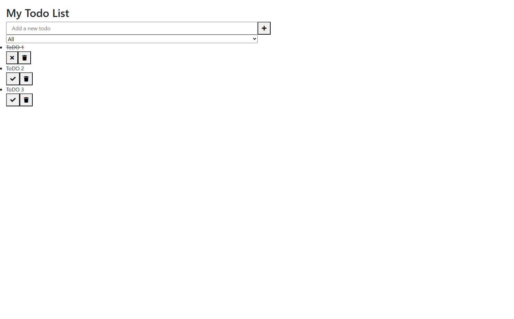
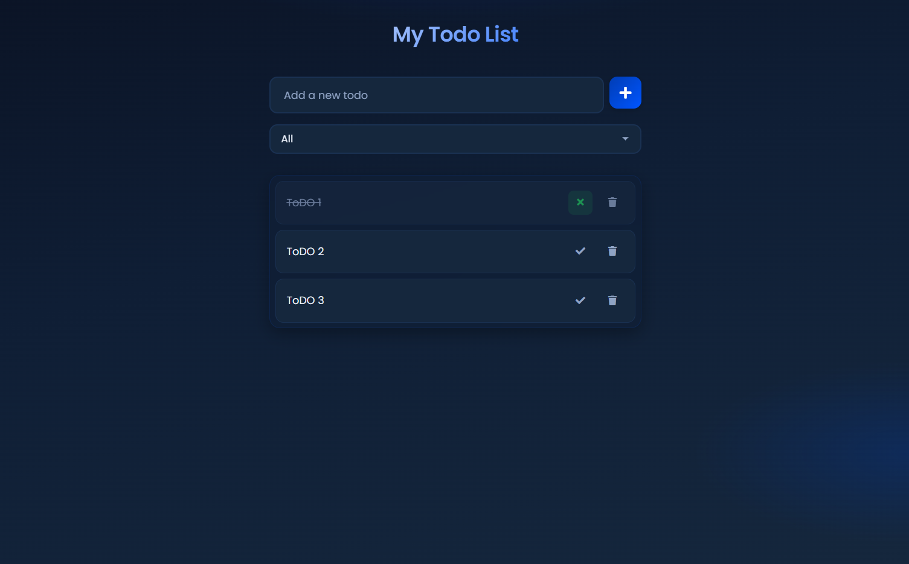
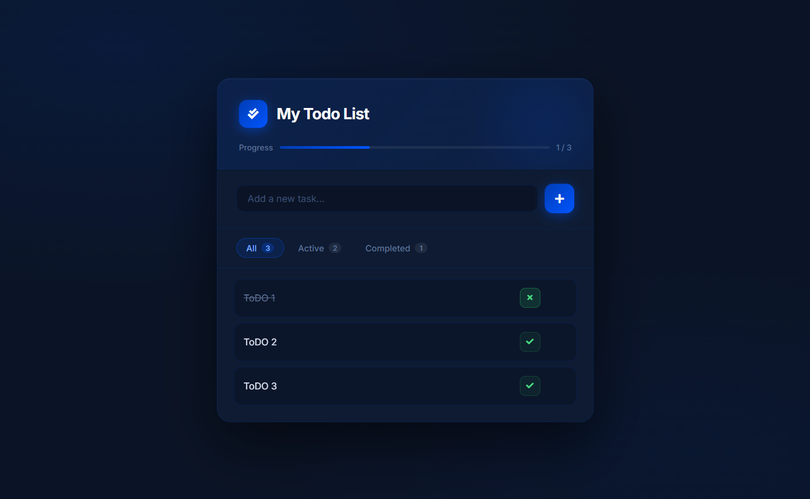
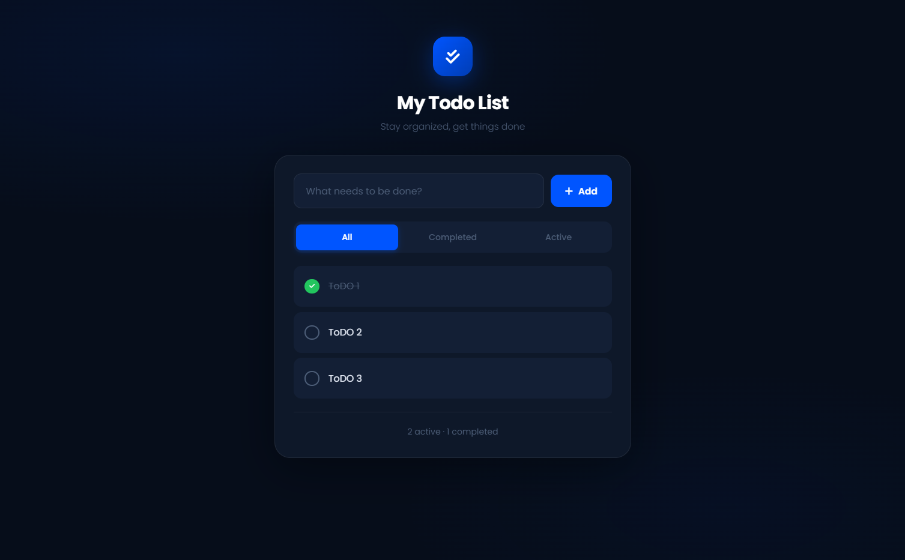
Cas pratique
D'autres exemples
Conclusion
Les questions légitimes et le doute
Quelques éléments de réponse
Quelques éléments de réponse
"Ne pas courir comme un poulet sans tête 🐓💨"
➔ L’objectif n’est pas d’être en avance et précurseur, mais d’adopter au bon moment
Les outils changent, mais les besoins restent : comprendre un problème, concevoir une solution, avoir l'esprit critique.
➔ L'IA fait évoluer comment on travaille, pas pourquoi on travaille.
➔ Le plaisir ne disparaît pas, il se déplace vers d’autres aspects du métier
Ce qui comptera vraiment à l'avenir
À vos
questions
- [1] Perplexity : perplexity.ai
- [2] Cursor : cursor.com
- [3] Étude : Labor market impacts of AI - Anthropic, mars 2026
Présentation
Template V2
Design pour vos présentations internes.
Sommaire
Objectifs
Agenda de la session
Qui suis-je ?

Spécialiste en architecture front-end et accessibilité web, 10+ ans d'expérience JavaScript. Expert React, Vue.js et performance web.
Analyse comparative
- ⚠ Dette technique élevée
- ⚠ Performance variable
- ⚠ UX incohérente
- ⚠ Manque de scalabilité
- ✓ Design system unifié
- ✓ Audit & optimisations ciblées
- ✓ Tests utilisateurs & A/B
- ✓ Architecture microservices
Points forts de la solution
Chiffres clés
Mesures sur 6 mois post-déploiement · Rapport interne Q3 2024
Comparaison des solutions
| Critère | Solution A | Solution B | Solution C |
|---|---|---|---|
| Coût de développement | Moyen | Élevé | Faible |
| Délai de mise en œuvre | 3 mois | 6 mois | 2 mois |
| Niveau de risque | Faible | Moyen | Élevé |
| Scalabilité | Excellente | Très bonne | Limitée |
Points d'attention
État d'avancement
- ✓Objectifs métier clairement définis
- ✓Parties prenantes alignées sur la vision
- ✓Équipe technique constituée et formée
- ✓Budget et ressources allouées
- ✗Plan de migration des données
- ✗Tests de charge validés
4 / 6 tâches complétées · Mise à jour 10 mars 2025
Roadmap de déploiement
- Phase de découverte et cadrage technique
- Design system et prototypage interactif
- Développement itératif par sprints (4 × 2 sem.)
- Tests utilisateurs et optimisations
- Déploiement progressif en production
- Monitoring et ajustements post-lancement
Jalons du projet
Architecture proposée

Implémentation
Architecture en détail
Plongée technique dans les composants principaux. Naviguez verticalement pour explorer chaque couche.
Flèche bas pour explorer les couches
Frontend Layer
API Gateway
Base de données
Animations
anim-slide-up
Les éléments montent depuis le bas. Idéal pour des listes, des cartes ou du contenu principal.
<div class="anim-slide-up anim-delay-2">…</div>
anim-slide-right
Les éléments arrivent depuis la gauche. Parfait pour des étapes, des listes ou un contenu narratif séquentiel.
<div class="anim-slide-right anim-delay-4">…</div>
anim-slide-left & anim-slide-down
Directions inverses — depuis la droite ou depuis le haut. Utile pour créer des effets de miroir ou d'entrée en opposition.
anim-fade & anim-zoom
Sans déplacement. anim-fade pour une apparition douce, anim-zoom pour un effet de focus.
<div class="anim-zoom anim-delay-3">…</div>
Toutes les classes disponibles
anim-slide-up
↑ monte depuis le bas
anim-slide-down
↓ descend depuis le haut
anim-slide-right
→ arrive depuis la gauche
anim-slide-left
← arrive depuis la droite
anim-fade
fondu, sans déplacement
anim-zoom
zoom depuis légèrement plus petit
anim-delay-1
100 ms
anim-delay-2
200 ms
anim-delay-3
300 ms
anim-delay-4
400 ms
anim-delay-5
500 ms
anim-delay-6
600 ms
Questions &
Discussion
Merci pour votre attention 🦖
N'hésitez pas à poser vos questions ou à partager vos retours !
- [1] Titre de la source — example.com
- [2] Deuxième référence — example.com
- [3] Troisième référence — example.com